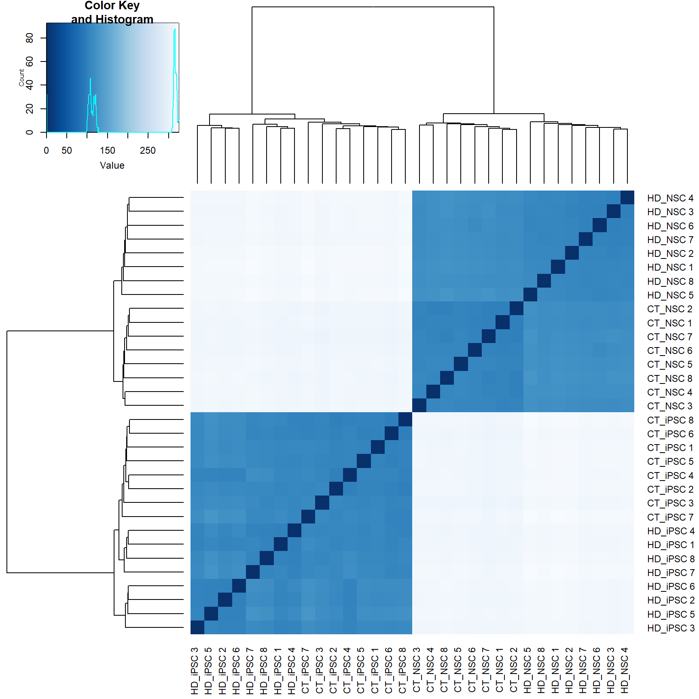
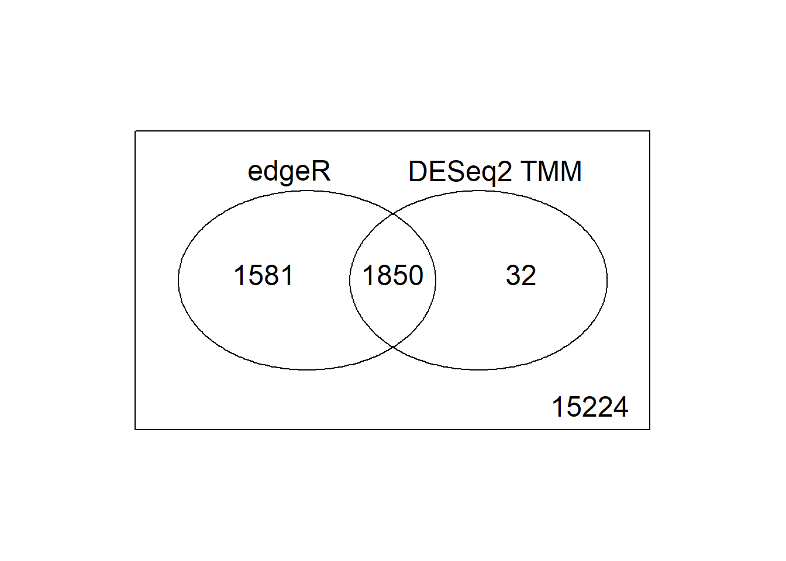
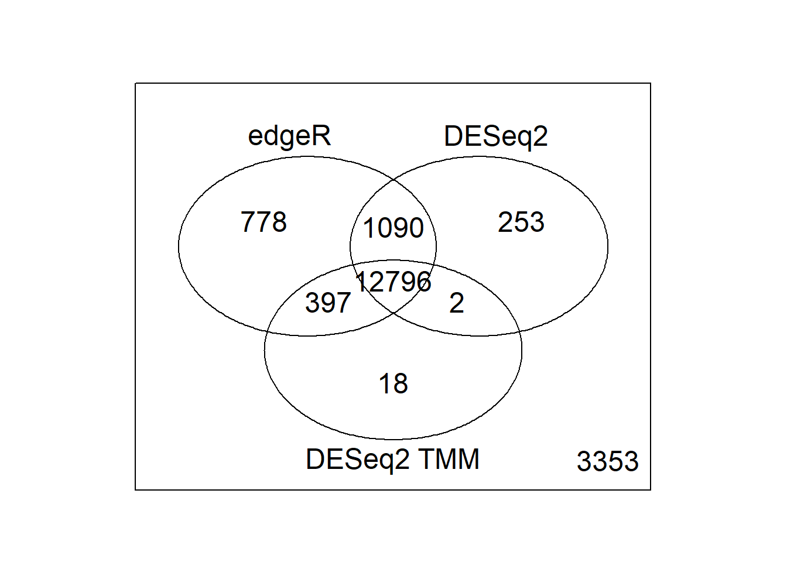

project
jiuchao
2019-06-06
Last updated: 2019-06-06
Checks: 6 0
Knit directory: STAT555-RNAseq/
This reproducible R Markdown analysis was created with workflowr (version 1.3.0). The Checks tab describes the reproducibility checks that were applied when the results were created. The Past versions tab lists the development history.
Great! Since the R Markdown file has been committed to the Git repository, you know the exact version of the code that produced these results.
Great job! The global environment was empty. Objects defined in the global environment can affect the analysis in your R Markdown file in unknown ways. For reproduciblity it’s best to always run the code in an empty environment.
The command set.seed(20190606) was run prior to running the code in the R Markdown file. Setting a seed ensures that any results that rely on randomness, e.g. subsampling or permutations, are reproducible.
Great job! Recording the operating system, R version, and package versions is critical for reproducibility.
Nice! There were no cached chunks for this analysis, so you can be confident that you successfully produced the results during this run.
Great! You are using Git for version control. Tracking code development and connecting the code version to the results is critical for reproducibility. The version displayed above was the version of the Git repository at the time these results were generated.
Note that you need to be careful to ensure that all relevant files for the analysis have been committed to Git prior to generating the results (you can use wflow_publish or wflow_git_commit). workflowr only checks the R Markdown file, but you know if there are other scripts or data files that it depends on. Below is the status of the Git repository when the results were generated:
Ignored files:
Ignored: analysis/figure/
Untracked files:
Untracked: DESeq2 size factors.csv
Untracked: TMM normalization factors.csv
Untracked: analysis/GSE74201_rawReadCounts.csv
Untracked: docs/assets/
Untracked: downRegulated Genes CTvsHDiPSC.txt
Untracked: downRegulated Genes in NSC.txt
Untracked: pca3d.tiff
Untracked: summary of pca.csv
Untracked: upRegulated Genes CTvsHDiPSC.txt
Untracked: upRegulated Genes in NSC.txt
Unstaged changes:
Modified: analysis/index.Rmd
Note that any generated files, e.g. HTML, png, CSS, etc., are not included in this status report because it is ok for generated content to have uncommitted changes.
These are the previous versions of the R Markdown and HTML files. If you’ve configured a remote Git repository (see ?wflow_git_remote), click on the hyperlinks in the table below to view them.
| File | Version | Author | Date | Message |
|---|---|---|---|---|
| html | 4e2fc97 | jiuchao | 2019-06-06 | Build site. |
| html | 34f40d3 | jiuchao | 2019-06-06 | Build site. |
| Rmd | 268472d | jiuchao | 2019-06-06 | add analysis |
Preliminaries
Load the R software libraries required to do the project.
library(hexbin)
library(DESeq2)Loading required package: S4VectorsLoading required package: stats4Loading required package: BiocGenericsLoading required package: parallel
Attaching package: 'BiocGenerics'The following objects are masked from 'package:parallel':
clusterApply, clusterApplyLB, clusterCall, clusterEvalQ,
clusterExport, clusterMap, parApply, parCapply, parLapply,
parLapplyLB, parRapply, parSapply, parSapplyLBThe following objects are masked from 'package:stats':
IQR, mad, sd, var, xtabsThe following objects are masked from 'package:base':
anyDuplicated, append, as.data.frame, basename, cbind,
colMeans, colnames, colSums, dirname, do.call, duplicated,
eval, evalq, Filter, Find, get, grep, grepl, intersect,
is.unsorted, lapply, lengths, Map, mapply, match, mget, order,
paste, pmax, pmax.int, pmin, pmin.int, Position, rank, rbind,
Reduce, rowMeans, rownames, rowSums, sapply, setdiff, sort,
table, tapply, union, unique, unsplit, which, which.max,
which.min
Attaching package: 'S4Vectors'The following object is masked from 'package:base':
expand.gridLoading required package: IRanges
Attaching package: 'IRanges'The following object is masked from 'package:grDevices':
windowsLoading required package: GenomicRangesLoading required package: GenomeInfoDbLoading required package: SummarizedExperimentLoading required package: BiobaseWelcome to Bioconductor
Vignettes contain introductory material; view with
'browseVignettes()'. To cite Bioconductor, see
'citation("Biobase")', and for packages 'citation("pkgname")'.Loading required package: DelayedArrayLoading required package: matrixStats
Attaching package: 'matrixStats'The following objects are masked from 'package:Biobase':
anyMissing, rowMediansLoading required package: BiocParallel
Attaching package: 'DelayedArray'The following objects are masked from 'package:matrixStats':
colMaxs, colMins, colRanges, rowMaxs, rowMins, rowRangesThe following objects are masked from 'package:base':
aperm, applylibrary(edgeR)Loading required package: limma
Attaching package: 'limma'The following object is masked from 'package:DESeq2':
plotMAThe following object is masked from 'package:BiocGenerics':
plotMAlibrary(qvalue)
library(FactoMineR)
library(gplots)
Attaching package: 'gplots'The following object is masked from 'package:IRanges':
spaceThe following object is masked from 'package:S4Vectors':
spaceThe following object is masked from 'package:stats':
lowesslibrary(RColorBrewer)
library(pca3d)1. RNA-seq Data
1.1 Create the RNA-seq count matrix.
reads = read.csv("analysis/GSE74201_rawReadCounts.csv", header = T, row.names = 1)
dim(reads)[1] 22506 32colnames(reads) = paste(rep(c("CT_NSC", "CT_iPSC", "HD_NSC", "HD_iPSC"), each=8), rep(c(1:8), 4))
reads[1:10,] CT_NSC 1 CT_NSC 2 CT_NSC 3 CT_NSC 4 CT_NSC 5 CT_NSC 6 CT_NSC 7
ACTG1 113419 115727 100639 97065 101324 105197 112475
ACTB 84151 88863 76511 73913 75466 79135 90264
RPL3 52703 51904 48555 45395 47168 48988 46702
GAPDH 58319 56809 49762 48065 50149 52756 52970
GNAS 81324 84549 68604 67267 72992 74836 81110
HMGA1 20103 20087 17884 17892 18534 19287 20865
RPS19 29469 32227 29556 28431 27743 27781 29150
HSP90B1 20167 19958 18871 16399 17222 17861 18656
HNRNPA2B1 41020 43998 34950 34990 34347 35550 38635
EEF1A1 56014 58871 52314 50760 50682 51170 51365
CT_NSC 8 CT_iPSC 1 CT_iPSC 2 CT_iPSC 3 CT_iPSC 4 CT_iPSC 5
ACTG1 99720 50004 58281 55528 71057 48612
ACTB 77132 61924 71601 74410 88842 65799
RPL3 46256 36473 42333 40663 52495 35869
GAPDH 48144 55073 67575 57294 76422 51522
GNAS 69956 14520 16946 17013 21180 14997
HMGA1 17525 35709 43352 40829 52233 35202
RPS19 27916 16126 19202 18594 26412 16136
HSP90B1 16920 18224 21758 19785 24897 17435
HNRNPA2B1 39106 26676 29321 34047 37219 28379
EEF1A1 49302 42763 50875 49177 65832 41261
CT_iPSC 6 CT_iPSC 7 CT_iPSC 8 HD_NSC 1 HD_NSC 2 HD_NSC 3
ACTG1 53337 48577 60080 99112 111297 140926
ACTB 69050 66635 79832 82695 89975 108990
RPL3 38741 35944 42922 40699 46100 58926
GAPDH 57676 52659 64661 48004 51725 64874
GNAS 15755 14492 18334 79657 90086 106687
HMGA1 37777 35021 43830 16730 18462 22430
RPS19 17536 18066 20385 22917 28556 34162
HSP90B1 18841 16658 21635 17129 19673 26876
HNRNPA2B1 29782 26853 32050 33624 38828 45565
EEF1A1 43875 42359 52088 45305 55503 76822
HD_NSC 4 HD_NSC 5 HD_NSC 6 HD_NSC 7 HD_NSC 8 HD_iPSC 1 HD_iPSC 2
ACTG1 114817 99884 117296 116319 101994 55495 57677
ACTB 89987 78771 93560 96170 82570 69753 71757
RPL3 47849 44844 50257 47031 40376 41201 45752
GAPDH 56552 49632 57455 53449 49765 60703 67657
GNAS 86985 82729 97349 93286 80310 18179 18081
HMGA1 19800 16628 20498 19827 17428 39853 45617
RPS19 28390 26730 29004 28335 23382 17330 21017
HSP90B1 21173 19487 21719 21548 17685 21421 21335
HNRNPA2B1 36435 37533 39419 40166 34051 31719 28743
EEF1A1 55333 53852 57711 56353 47278 51392 56691
HD_iPSC 3 HD_iPSC 4 HD_iPSC 5 HD_iPSC 6 HD_iPSC 7 HD_iPSC 8
ACTG1 57166 55263 58168 58923 52363 53036
ACTB 78932 76185 74597 75800 74163 73997
RPL3 41384 41460 47378 48067 36334 36058
GAPDH 59462 59079 64690 70837 53721 54471
GNAS 17900 18467 18625 18213 15674 16681
HMGA1 42853 43212 43781 44048 37244 37802
RPS19 20864 19992 23203 23238 18297 17792
HSP90B1 21128 19754 20673 22382 17700 18000
HNRNPA2B1 30285 31027 31972 32460 26856 29551
EEF1A1 51611 49549 61038 59603 41095 42707`
1.2 Quality assessment
1.2.1 Draw a histogram of log2(counts+0.25) for each sample.
logreads = log2(reads+0.25)
par(mfrow=c(8,4))
for (i in 1:32) hist(logreads[,i],main=colnames(logreads)[i], nclass = 50)
| Version | Author | Date |
|---|---|---|
| 34f40d3 | jiuchao | 2019-06-06 |
1.2.2 Use hexplom to draw scatterplots of the log2(counts).
plot(hexplom(logreads[,1:32]))
| Version | Author | Date |
|---|---|---|
| 34f40d3 | jiuchao | 2019-06-06 |
1.2.3 Compute the total library size for each of the 12 libraries.
lib.size=colSums(reads)
lib.size CT_NSC 1 CT_NSC 2 CT_NSC 3 CT_NSC 4 CT_NSC 5 CT_NSC 6 CT_NSC 7
19607706 19814499 17454073 16466850 16991936 17861183 18910539
CT_NSC 8 CT_iPSC 1 CT_iPSC 2 CT_iPSC 3 CT_iPSC 4 CT_iPSC 5 CT_iPSC 6
16966083 14183353 16356787 16075904 19648775 14080676 15311492
CT_iPSC 7 CT_iPSC 8 HD_NSC 1 HD_NSC 2 HD_NSC 3 HD_NSC 4 HD_NSC 5
13586886 16687870 16035612 17812738 22986648 19327528 17100262
HD_NSC 6 HD_NSC 7 HD_NSC 8 HD_iPSC 1 HD_iPSC 2 HD_iPSC 3 HD_iPSC 4
19674265 18939504 16482500 16263660 16982989 16356192 16463954
HD_iPSC 5 HD_iPSC 6 HD_iPSC 7 HD_iPSC 8
17064944 17476873 14593949 15067593 1.2.4 Boxplot of logreads for each sample.
boxplot(logreads, outline = TRUE,col = paste(rep(c("Red", "Blue", "orange", "cyan"), each=8)), main = "Boxplot of log2(Gene Expression) of Sample 1 to 32", ylab = "log2 Gene Expression")
| Version | Author | Date |
|---|---|---|
| 34f40d3 | jiuchao | 2019-06-06 |
1.2.5 Finally, cluster the samples to get the big picture of whether there are differences among different conditions.
par(mfrow=c(1,1))
dist=dist(t(logreads))
plot(hclust(dist))
| Version | Author | Date |
|---|---|---|
| 34f40d3 | jiuchao | 2019-06-06 |
1.2 RNA-seq data filtering and Normalization
1.2.1 Discard features with fewer than 10 reads in all the samples as there is no power to detect differential expression analysis for features with very low total counts. Create a new count matrix with genes with at least 10 reads per feature and call it bigReads.
geneSum = rowSums(reads)
bigReads = reads[geneSum>=10,]
nrow(bigReads)[1] 186871.2.2 Normalize data with TMM in edgeR and compute the dispersion.
condition=as.factor(paste(rep(c("CT_NSC","CT_iPSC", "HD_NSC", "HD_iPSC"), each = 8)))
condition [1] CT_NSC CT_NSC CT_NSC CT_NSC CT_NSC CT_NSC CT_NSC CT_NSC
[9] CT_iPSC CT_iPSC CT_iPSC CT_iPSC CT_iPSC CT_iPSC CT_iPSC CT_iPSC
[17] HD_NSC HD_NSC HD_NSC HD_NSC HD_NSC HD_NSC HD_NSC HD_NSC
[25] HD_iPSC HD_iPSC HD_iPSC HD_iPSC HD_iPSC HD_iPSC HD_iPSC HD_iPSC
Levels: CT_iPSC CT_NSC HD_iPSC HD_NSCd=DGEList(counts=bigReads, group=condition,genes=rownames(bigReads))
d=calcNormFactors(d,method="TMM")
write.csv(d$samples$norm.factors, file ="TMM normalization factors.csv", quote = FALSE)
designmatrix = model.matrix(~0+condition)
colnames(designmatrix) <- levels(condition)
d=estimateDisp(d,designmatrix,robust=TRUE)
plotBCV(d)
| Version | Author | Date |
|---|---|---|
| 34f40d3 | jiuchao | 2019-06-06 |
1.2.3 Run DESeq and extract the normalized counts for visualization.
samples = colnames(bigReads)
colData = data.frame(samples=samples,condition=condition)
dds = DESeqDataSetFromMatrix(countData=bigReads, colData=colData, design = ~ condition)
dds = DESeq(dds)estimating size factorsestimating dispersionsgene-wise dispersion estimatesmean-dispersion relationshipfinal dispersion estimatesfitting model and testing-- replacing outliers and refitting for 2 genes
-- DESeq argument 'minReplicatesForReplace' = 7
-- original counts are preserved in counts(dds)estimating dispersionsfitting model and testingres = results(dds)
#Compute normalized counts
nc = counts(dds,normalized=TRUE)
rld = assay(rlog(dds, blind = FALSE))rlog() may take a few minutes with 30 or more samples,
vst() is a much faster transformationSave the size factors after and plot the dispersion after DESeq2 normalization.
write.csv(dds$sizeFactor, "DESeq2 size factors.csv", quote = FALSE)
plotDispEsts(dds)
| Version | Author | Date |
|---|---|---|
| 34f40d3 | jiuchao | 2019-06-06 |
1.3 Check data quality after DESeq2 normalization
1.3.1 Redo the histograms with log2(normalized counts).
lognc = log2(nc+0.25)
par(mfrow=c(8,4))
for (i in 1:32) hist(lognc[,i],main=colnames(lognc)[i], nclass = 50)
| Version | Author | Date |
|---|---|---|
| 34f40d3 | jiuchao | 2019-06-06 |
1.3.2 Redo the scatter plot matrix with log2(normalized counts).
plot(hexplom(lognc[,1:32]))
| Version | Author | Date |
|---|---|---|
| 34f40d3 | jiuchao | 2019-06-06 |
1.3.3 Principle Component Analysis with normalized counts.
pca = prcomp(t(nc), scale. = TRUE)
pca_sum = summary(pca)
pca_sumImportance of components:
PC1 PC2 PC3 PC4 PC5
Standard deviation 108.3378 39.10640 27.09451 19.27273 18.48070
Proportion of Variance 0.6281 0.08184 0.03928 0.01988 0.01828
Cumulative Proportion 0.6281 0.70993 0.74921 0.76909 0.78736
PC6 PC7 PC8 PC9 PC10
Standard deviation 17.69771 15.17885 14.73229 14.15090 13.71388
Proportion of Variance 0.01676 0.01233 0.01161 0.01072 0.01006
Cumulative Proportion 0.80412 0.81645 0.82807 0.83878 0.84885
PC11 PC12 PC13 PC14 PC15
Standard deviation 13.57296 13.22061 12.95733 12.72414 12.70002
Proportion of Variance 0.00986 0.00935 0.00898 0.00866 0.00863
Cumulative Proportion 0.85871 0.86806 0.87704 0.88571 0.89434
PC16 PC17 PC18 PC19 PC20
Standard deviation 12.46830 12.23533 11.91292 11.71895 11.55643
Proportion of Variance 0.00832 0.00801 0.00759 0.00735 0.00715
Cumulative Proportion 0.90266 0.91067 0.91826 0.92561 0.93276
PC21 PC22 PC23 PC24 PC25
Standard deviation 11.35986 11.28378 11.1917 10.90336 10.70875
Proportion of Variance 0.00691 0.00681 0.0067 0.00636 0.00614
Cumulative Proportion 0.93967 0.94648 0.9532 0.95954 0.96568
PC26 PC27 PC28 PC29 PC30
Standard deviation 10.64921 10.51334 10.44829 10.37723 10.10305
Proportion of Variance 0.00607 0.00591 0.00584 0.00576 0.00546
Cumulative Proportion 0.97175 0.97766 0.98351 0.98927 0.99473
PC31 PC32
Standard deviation 9.92267 7.579e-14
Proportion of Variance 0.00527 0.000e+00
Cumulative Proportion 1.00000 1.000e+00write.csv(pca_sum$importance,file="summary of pca.csv", quote=FALSE)
#2D demonstration
plot(pca$x[, 1], pca$x[, 2], col = rep(c("red","blue","orange","cyan"),each = 8), main = "Principle Component Analysis", xlab = "PC1:63% variance", ylab = "PC2:8% variace")
| Version | Author | Date |
|---|---|---|
| 34f40d3 | jiuchao | 2019-06-06 |
plot(pca$x[, 1], pca$x[, 3], col = rep(c("red","blue","orange","cyan"),each = 8), main = "Principle Component Analysis", xlab = "PC1:63% variance", ylab = "PC3: 4% variance")
| Version | Author | Date |
|---|---|---|
| 34f40d3 | jiuchao | 2019-06-06 |
#3d demonstration
pca3d(pca, group=condition, col = rep(c("red","blue","orange","cyan"),each = 8), axe.titles = c("PC1:63% variance", "PC2:8% variance","PC3:4% variance"), radius = 2)[1] 4.424554 2.907972 1.610897
Creating new devicesnapshotPCA3d(file="pca3d.tiff")1.3.4 Boxplot demonstration of log2(normalized counts).
boxplot(lognc, outline = TRUE,col = paste(rep(c("Red", "Blue", "orange", "cyan"), each=8)), main = "Boxplot of log2(normalized counts) of four conditions", ylab = "log2 Gene Expression")
| Version | Author | Date |
|---|---|---|
| 34f40d3 | jiuchao | 2019-06-06 |
1.3.5 Heatmap of sample-to-sample distances.
distMatrix = dist(t(lognc))
a = as.dendrogram(hclust(distMatrix))
plot((hclust(distMatrix)))
| Version | Author | Date |
|---|---|---|
| 34f40d3 | jiuchao | 2019-06-06 |
sampleDistMatrix = as.matrix(distMatrix)
colours = colorRampPalette(rev(brewer.pal(9, "Blues")) )(255)
heatmap.2(sampleDistMatrix, trace = "none", col = colours, Rowv = a, Colv = a)
| Version | Author | Date |
|---|---|---|
| 34f40d3 | jiuchao | 2019-06-06 |
2. Differential Expression Analysis of “HD NSC” and “CT NSC”- DESeq2
2.1 Extract differential expression results of “HD_NSC vs CT_NSC” from dds.
res_CTvsHDNSC = results(dds, contrast = c("condition", "HD_NSC", "CT_NSC"))2.2 Plot histogram of p-values and estimate pi0 with qvalue function.
hist(res_CTvsHDNSC$pvalue, nclass=50, main = "DESeq2", xlab = "p-values")
| Version | Author | Date |
|---|---|---|
| 34f40d3 | jiuchao | 2019-06-06 |
qDESeq_CTvsHDNSC = qvalue(res_CTvsHDNSC$pvalue)
qDESeq_CTvsHDNSC$pi0[1] 0.77410342.3 repalce genes with ajusted pvalues as “NA” with 1 for DEGs calculation.
NA_CTvsHDNSC =sum(is.na(res_CTvsHDNSC$padj))
nc_CTvsHDNSC = nc[,c(1:8, 17:24)]
dim(nc_CTvsHDNSC)[1] 18687 16rld_CTvsHDNSC = rld[,c(1:8, 17:24)]
dim(rld_CTvsHDNSC)[1] 18687 16res_CTvsHDNSC[is.na(res_CTvsHDNSC$padj),]$padj = rep(1, NA_CTvsHDNSC)
dim(res_CTvsHDNSC)[1] 18687 62.4 Save rlog transformed data of differentially expressed genes with padj < 0.01 for data visualization later.
sum(res_CTvsHDNSC$padj<0.01)[1] 3611DEGs_CTvsHDNSC = nc[res_CTvsHDNSC$padj<0.01,c(1:8, 17:24)]
rldDEGs_CTvsHDNSC = rld[res_CTvsHDNSC$padj<0.01,c(1:8, 17:24)]
dim(DEGs_CTvsHDNSC)[1] 3611 16dim(rldDEGs_CTvsHDNSC)[1] 3611 162.5 Save upregulated and downregulated genes respectively for GO analysis.
upReg_CTvsHDNSC= rownames(nc_CTvsHDNSC[res_CTvsHDNSC$padj<0.01 & res_CTvsHDNSC$log2FoldChange>0,])
length(upReg_CTvsHDNSC)[1] 1983downReg_CTvsHDNSC = rownames(nc_CTvsHDNSC[res_CTvsHDNSC$padj<0.01 & res_CTvsHDNSC$log2FoldChange<0,])
length(downReg_CTvsHDNSC)[1] 1628write.table(upReg_CTvsHDNSC,file="upRegulated Genes in NSC.txt", sep="\t", row.name=FALSE, col.names="Genes",quote=FALSE)
write.table(downReg_CTvsHDNSC,file="downRegulated Genes in NSC.txt", sep="\t", row.name=FALSE, col.names="Genes",quote=FALSE)2.6 Use correlation distance to look at the complete linkage clustering of differentially expressed genes identified by DESeq2.
CorComplete=hclust(as.dist(1-cor(t(rldDEGs_CTvsHDNSC))))
plot(CorComplete,main="Correlation, Complete")
| Version | Author | Date |
|---|---|---|
| 34f40d3 | jiuchao | 2019-06-06 |
2.8 Draw heatmap of differentially expressed genes.
rldDEGs_CTvsHDNSC_M = data.matrix(rldDEGs_CTvsHDNSC)
heatmap.2(rldDEGs_CTvsHDNSC_M,distfun=function(x) as.dist(1-(cor(t(x)))), scale = "row", trace = "none",margins=c(8,8), main = "CT_NSC vs HD_NSC")
| Version | Author | Date |
|---|---|---|
| 34f40d3 | jiuchao | 2019-06-06 |
3. Differential Expression Analysis of “HD NSC” and “CT NSC”- edgR
3.1 Perform exactTest of “CT_NSC” and “HD_NSC”, draw histogram of p-values, adjust p-values to qvalues and estimate pi0,
exact.CTvsHDNSC=exactTest(d,pair=c("CT_NSC","HD_NSC"))
hist(exact.CTvsHDNSC$table$PValue, nclass=50, main = "edgeR", xlab = "p-values")
| Version | Author | Date |
|---|---|---|
| 34f40d3 | jiuchao | 2019-06-06 |
edgeRq.CTvsHDNSC= qvalue(exact.CTvsHDNSC$table$PValue)
edgeRq.CTvsHDNSC$pi0[1] 13.2 Get differential expression gene number from edgeR, and compare the result with those obtained from DESeq2.
sum(edgeRq.CTvsHDNSC$qvalues<0.01)[1] 3431upR_CTvsHDNSC_edgeR = sum(edgeRq.CTvsHDNSC$qvalues<0.01 & exact.CTvsHDNSC$table$logFC>0)
upR_CTvsHDNSC_edgeR[1] 1812downR_CTvsHDNSC_edgeR = sum(edgeRq.CTvsHDNSC$qvalues<0.01 & exact.CTvsHDNSC$table$logFC<0)
downR_CTvsHDNSC_edgeR[1] 1619vennDiagram(vennCounts(cbind(edgeRq.CTvsHDNSC$qvalues<0.01,res_CTvsHDNSC$padj<0.01),include="both"),
names=c("edgeR","DESeq2"))
| Version | Author | Date |
|---|---|---|
| 34f40d3 | jiuchao | 2019-06-06 |
4. Differential Expression Analysis of “HD NSC” and “CT NSC”- DESeq2 using normalization factors from TMM
4.1 Construct DESeqDataSet, assign normalization factors obtained from TMM to it as size factors. Do DESeq2 analysis with such pre-existing size factors.
dds_2 = DESeqDataSetFromMatrix(countData=bigReads, colData=colData, design = ~ condition)
sizeFactors(dds_2) = 1/d$samples$norm.factors
dds_2 = DESeq(dds_2)using pre-existing size factorsestimating dispersionsgene-wise dispersion estimatesmean-dispersion relationshipfinal dispersion estimatesfitting model and testing-- replacing outliers and refitting for 2 genes
-- DESeq argument 'minReplicatesForReplace' = 7
-- original counts are preserved in counts(dds)estimating dispersionsfitting model and testingnc_2 = counts(dds_2,normalized=TRUE)
rld_2 = assay(rlog(dds_2, blind = FALSE))rlog() may take a few minutes with 30 or more samples,
vst() is a much faster transformation4.2 Extract differential expression results of “HD_NSC vs CT_NSC” from dds_2.
res_CTvsHDNSC2 = results(dds_2, contrast = c("condition", "HD_NSC", "CT_NSC"))4.3 Plot histogram of p-values and estimate pi0 with qvalue function.
hist(res_CTvsHDNSC2$pvalue, nclass=50, main = "DESeq2 with TMM", xlab = "p-values")
| Version | Author | Date |
|---|---|---|
| 34f40d3 | jiuchao | 2019-06-06 |
qDESeq_CTvsHDNSC2 = qvalue(res_CTvsHDNSC2$pvalue)
qDESeq_CTvsHDNSC2$pi0[1] 0.94690344.4 Repalce genes with ajusted pvalues as “NA” with 1 for DEGs calculation.
NA_CTvsHDNSC2 = sum(is.na(res_CTvsHDNSC2$padj))
nc_CTvsHDNSC2 = nc_2[, c(1:8, 17:24)]
dim(nc_CTvsHDNSC2)[1] 18687 16rld_CTvsHDNSC2 = rld_2[,c(1:8, 17:24)]
dim(rld_CTvsHDNSC2)[1] 18687 16res_CTvsHDNSC2[is.na(res_CTvsHDNSC2$padj),]$padj = rep(1, NA_CTvsHDNSC2)
dim(res_CTvsHDNSC2)[1] 18687 64.5 Save rlog transformed data of differentially expressed genes with padj < 0.01 for data visualization later.
sum(res_CTvsHDNSC2$padj<0.01)[1] 1882DEGs_CTvsHDNSC2 = nc_CTvsHDNSC2[res_CTvsHDNSC2$padj<0.01,]
rldDEGs_CTvsHDNSC2 = rld_CTvsHDNSC2[res_CTvsHDNSC2$padj<0.01,]
dim(DEGs_CTvsHDNSC2)[1] 1882 16dim(rldDEGs_CTvsHDNSC2)[1] 1882 164.5 Use correlation distance to look at complete linkage clustering of differentially expressed genes identified by DESeq2 with size factors obtained from TMM.
CorComplete=hclust(as.dist(1-cor(t(rldDEGs_CTvsHDNSC2))))
plot(CorComplete,main="Correlation, Complete")
| Version | Author | Date |
|---|---|---|
| 34f40d3 | jiuchao | 2019-06-06 |
4.6 Draw heatmap of differentially expressed genes.
rldDEGs_CTvsHDNSC_M2 = data.matrix(rldDEGs_CTvsHDNSC2)
heatmap.2(rldDEGs_CTvsHDNSC_M2,distfun=function(x) as.dist(1-(cor(t(x)))), scale = "row", trace = "none",margins=c(8,8))
| Version | Author | Date |
|---|---|---|
| 34f40d3 | jiuchao | 2019-06-06 |
4.7 Comparing edgeR and DESeq2 and DESeq2 using normalization factors from TMM.
vennDiagram(vennCounts(cbind(edgeRq.CTvsHDNSC$qvalues<0.01,res_CTvsHDNSC2$padj<0.01 ),include="both"),
names=c("edgeR", "DESeq2 TMM"))
| Version | Author | Date |
|---|---|---|
| 34f40d3 | jiuchao | 2019-06-06 |
vennDiagram(vennCounts(cbind(res_CTvsHDNSC$padj<0.01,res_CTvsHDNSC2$padj<0.01),include="both"),
names=c("DESeq2", "DESeq2 TMM"))
| Version | Author | Date |
|---|---|---|
| 34f40d3 | jiuchao | 2019-06-06 |
vennDiagram(vennCounts(cbind(edgeRq.CTvsHDNSC$qvalues<0.01,res_CTvsHDNSC$padj<0.01, res_CTvsHDNSC2$padj<0.01 ),include="both"),
names=c("edgeR","DESeq2", "DESeq2 TMM"))
| Version | Author | Date |
|---|---|---|
| 34f40d3 | jiuchao | 2019-06-06 |
5. Differential Expression Analysis of “HD iPSCs” and “CT iPSCs”- DESeq2
5.1 Extract differential expression results of “HD_iPSC vs CT_iPSC” from dds.
res_CTvsHDiPSC = results(dds, contrast = c("condition", "HD_iPSC", "CT_iPSC"))5.2 Plot histogram of p-values and estimate pi0 with qvalue function.
hist(res_CTvsHDiPSC$pvalue, nclass=50, main = "DESeq2", xlab = "p-values")
| Version | Author | Date |
|---|---|---|
| 34f40d3 | jiuchao | 2019-06-06 |
qDESeq_CTvsHDiPSC = qvalue(res_CTvsHDiPSC$pvalue)
qDESeq_CTvsHDiPSC$pi0[1] 0.81599555.3 Repalce genes with ajusted pvalues as “NA” with 1 for DEGs calculation.
#calculate number of "NA"
NA_CTvsHDiPSC = sum(is.na(res_CTvsHDiPSC$padj))
NA_CTvsHDiPSC[1] 1450#remove padj == NA
nc_CTvsHDiPSC = nc[,c(9:16, 25:32)]
dim(nc_CTvsHDiPSC)[1] 18687 16rld_CTvsHDiPSC = rld[,c(9:16, 25:32)]
res_CTvsHDiPSC[is.na(res_CTvsHDiPSC$padj),]$padj = rep(1, NA_CTvsHDiPSC)
dim(res_CTvsHDiPSC)[1] 18687 65.4 Save rlog transformed data of differentially expressed genes with padj < 0.01 for data visualization later.
sum(res_CTvsHDiPSC$padj<0.01)[1] 504DEGs_CTvsHDiPSC = nc_CTvsHDiPSC[res_CTvsHDiPSC$padj<0.01,]
dim(DEGs_CTvsHDiPSC)[1] 504 16rldDEGs_CTvsHDiPSC = rld_CTvsHDiPSC[res_CTvsHDiPSC$padj<0.01,]
dim(rldDEGs_CTvsHDiPSC)[1] 504 165.5 Save upregulated and downregulated genes respectively for GO analysis.
upReg_TvsHDiPSC= rownames(nc_CTvsHDiPSC[res_CTvsHDiPSC$padj<0.01 & res_CTvsHDiPSC$log2FoldChange>0,])
length(upReg_TvsHDiPSC)[1] 275downReg_CTvsHDiPSC = rownames(nc_CTvsHDiPSC[res_CTvsHDiPSC$padj<0.01 & res_CTvsHDiPSC$log2FoldChange<0,])
length(downReg_CTvsHDiPSC)[1] 229write.table(upReg_TvsHDiPSC,file="upRegulated Genes CTvsHDiPSC.txt", sep="\t", row.name=FALSE, col.names="Genes",quote=FALSE)
write.table(downReg_CTvsHDiPSC,file="downRegulated Genes CTvsHDiPSC.txt", sep="\t", row.name=FALSE, col.names="Genes",quote=FALSE)5.6 Use correlation distance to look at complete linkage clustering of differentially expressed genes identified by DESeq2.
CorComplete=hclust(as.dist(1-cor(t(rldDEGs_CTvsHDiPSC))))
plot(CorComplete,main="Correlation, Complete")
| Version | Author | Date |
|---|---|---|
| 34f40d3 | jiuchao | 2019-06-06 |
5.7 Draw heatmap of differentially expressed genes.
rldDEGs_CTvsHDiPSC_M = data.matrix(rldDEGs_CTvsHDiPSC)
heatmap.2(rldDEGs_CTvsHDiPSC_M,distfun=function(x) as.dist(1-(cor(t(x)))), scale = "row", trace = "none",margins=c(8,8), main = "CT_iPSC vs HD_iPSC with DESeq2 ")
| Version | Author | Date |
|---|---|---|
| 34f40d3 | jiuchao | 2019-06-06 |
6. Differential Expression Analysis of “HD iPSC” and “CT iPSC”- edgR
6.1 Perform exactTest of “HD_iPSC” and “CT_iPSC”, draw histogram of p-values, adjust p-values to qvalues and estimate pi0,
exact.CTvsHDiPSC=exactTest(d,pair=c("CT_iPSC","HD_iPSC"))
hist(exact.CTvsHDiPSC$table$PValue, nclass=50, main = "edgeR", xlab = "p-values")
| Version | Author | Date |
|---|---|---|
| 34f40d3 | jiuchao | 2019-06-06 |
edgeRq.CTvsHDiPSC= qvalue(exact.CTvsHDiPSC$table$PValue)
edgeRq.CTvsHDiPSC$pi0[1] 16.2 Get differential expression gene number from edgeR, and compare the result with those obtained from DESeq2.
sum(edgeRq.CTvsHDiPSC$qvalues<0.01)[1] 487upR_CTvsHDiPSC_edgeR = sum(edgeRq.CTvsHDiPSC$qvalues<0.01 & exact.CTvsHDiPSC$table$logFC>0)
upR_CTvsHDiPSC_edgeR[1] 236downR_CTvsHDiPSC_edgeR = sum(edgeRq.CTvsHDiPSC$qvalues<0.01 & exact.CTvsHDiPSC$table$logFC<0)
downR_CTvsHDiPSC_edgeR[1] 251vennDiagram(vennCounts(cbind(edgeRq.CTvsHDiPSC$qvalues<0.01,res_CTvsHDiPSC$padj<0.01),include="both"),
names=c("edgeR","DESeq2"))
| Version | Author | Date |
|---|---|---|
| 34f40d3 | jiuchao | 2019-06-06 |
7. Differential Expression Analysis of “HD iPSC” and “CT iPSC”- DESeq2 using normalization factors from TMM
7.1 Extract differential expression results of “CT_iPSC vs HD_iPSC” from dds_2.
res_CTvsHDiPSC2 = results(dds_2, contrast = c("condition", "HD_iPSC", "CT_iPSC"))7.2 Plot histogram of p-values and estimate pi0 with qvalue function.
hist(res_CTvsHDiPSC2$pvalue, nclass=50, main = "DESeq2 with TMM", xlab = "p-values")
| Version | Author | Date |
|---|---|---|
| 34f40d3 | jiuchao | 2019-06-06 |
qDESeq_CTvsHDiPSC2 = qvalue(res_CTvsHDiPSC2$pvalue)
qDESeq_CTvsHDiPSC2$pi0[1] 0.98954847.3 Remove genes with ajusted pvalues as “NA” from results.
# Calculate the number of "NA"
NA_CTvsHDiPSC2 = sum(is.na(res_CTvsHDiPSC2$padj))
NA_CTvsHDiPSC2[1] 363#repalce padj == "NA" with 1
nc_CTvsHDiPSC2 = nc_2[,c(9:16, 25:32)]
dim(nc_CTvsHDiPSC2)[1] 18687 16rld_CTvsHDiPSC2 = rld_2[,c(9:16, 25:32)]
res_CTvsHDiPSC2[is.na(res_CTvsHDiPSC2$padj),]$padj = rep(1, NA_CTvsHDiPSC2)
dim(res_CTvsHDiPSC2)[1] 18687 67.4 Save rlog transformed data of differentially expressed genes with padj < 0.01 for data visualization later.
sum(res_CTvsHDiPSC2$padj<0.01)[1] 257DEGs_CTvsHDiPSC2 = nc_CTvsHDiPSC2[res_CTvsHDiPSC2$padj<0.01,]
dim(DEGs_CTvsHDiPSC2)[1] 257 16rldDEGs_CTvsHDiPSC2 = rld_CTvsHDiPSC2[res_CTvsHDiPSC2$padj<0.01,]
dim(rldDEGs_CTvsHDiPSC2)[1] 257 167.5 Use correlation distance to look at complete linkage clustering of differentially expressed genes identified by DESeq2 with size factors obtained from TMM.
CorComplete=hclust(as.dist(1-cor(t(rldDEGs_CTvsHDiPSC2))))
plot(CorComplete,main="Correlation, Complete")
| Version | Author | Date |
|---|---|---|
| 34f40d3 | jiuchao | 2019-06-06 |
7.6 Draw heatmap of differentially expressed genes.
rldDEGs_CTvsHDiPSC_M2 = data.matrix(rldDEGs_CTvsHDiPSC2)
heatmap.2(rldDEGs_CTvsHDiPSC_M2,distfun=function(x) as.dist(1-(cor(t(x)))), scale = "row", trace = "none",margins=c(8,8))
| Version | Author | Date |
|---|---|---|
| 34f40d3 | jiuchao | 2019-06-06 |
7.7 Comparing edgeR and DESeq2 and DESeq2 using normalization factors from TMM.
vennDiagram(vennCounts(cbind(edgeRq.CTvsHDiPSC$qvalues<0.01, res_CTvsHDiPSC2$padj<0.01)),include = "both",
names=c("edgeR", "DESeq TMM"))
| Version | Author | Date |
|---|---|---|
| 34f40d3 | jiuchao | 2019-06-06 |
vennDiagram(vennCounts(cbind(res_CTvsHDiPSC$padj<0.01, res_CTvsHDiPSC2$padj<0.01)),include = "both",
names=c("DESeq2", "DESeq TMM"))
| Version | Author | Date |
|---|---|---|
| 34f40d3 | jiuchao | 2019-06-06 |
vennDiagram(vennCounts(cbind(edgeRq.CTvsHDiPSC$qvalues<0.01,res_CTvsHDiPSC$padj<0.01, res_CTvsHDiPSC2$padj<0.01)), include = "both",
names=c("edgeR","DESeq2", "DESeq TMM"))
| Version | Author | Date |
|---|---|---|
| 34f40d3 | jiuchao | 2019-06-06 |
8. Differential Expression Analysis of “CT NSC” and “CT iPSC”- DESeq2
8.1 Extract differential expression results of “CT_NSC vs CT_iPSC” from dds.
res_iPSCvsNSC = results(dds, contrast = c("condition", "CT_NSC", "CT_iPSC"))8.2 Plot histogram of p-values and estimate pi0 with qvalue function.
hist(res_iPSCvsNSC$pvalue, nclass=50, main = "DESeq2", xlab = "p-values")
| Version | Author | Date |
|---|---|---|
| 34f40d3 | jiuchao | 2019-06-06 |
qDESeq_iPSCvsNSC = qvalue(res_iPSCvsNSC$pvalue)
qDESeq_iPSCvsNSC$pi0[1] 0.11066968.3 Replace genes with ajusted pvalues as “NA” with 1 for DEGs calculation.
NA_iPSCvsNSC = sum(is.na(res_iPSCvsNSC$padj))
NA_iPSCvsNSC[1] 0res_iPSCvsNSC[is.na(res_iPSCvsNSC$padj),]$padj = rep(1, NA_iPSCvsNSC)
dim(res_iPSCvsNSC)[1] 18687 68.4 calculate the number of differentially expressed genes with padj < 0.01.
sum(res_iPSCvsNSC$padj<0.01)[1] 141419. Differential Expression Analysis of “CT NSC” and “CT iPSC”- edgR
3.1 Perform exactTest of “CT NSC” and “CT iPSC”, draw histogram of p-values, adjust p-values to qvalues and estimate pi0,
exact.iPSCvsNSC=exactTest(d,pair=c("CT_iPSC","CT_NSC"))
hist(exact.iPSCvsNSC$table$PValue, nclass=50, main = "edgeR", xlab = "p-values")
| Version | Author | Date |
|---|---|---|
| 34f40d3 | jiuchao | 2019-06-06 |
edgeRq.iPSCvsNSC= qvalue(exact.iPSCvsNSC$table$PValue)
edgeRq.iPSCvsNSC$pi0[1] 0.25729089.2 Get differential expression gene number from edgeR, and compare the result with those obtained from DESeq2.
sum(edgeRq.iPSCvsNSC$qvalues<0.01)[1] 15061vennDiagram(vennCounts(cbind(edgeRq.iPSCvsNSC$qvalues<0.01,res_iPSCvsNSC$padj<0.01),include="both"),
names=c("edgeR","DESeq2"))
| Version | Author | Date |
|---|---|---|
| 34f40d3 | jiuchao | 2019-06-06 |
10. Differential Expression Analysis of “CT NSC” and “CT iPSC”- DESeq2 using normalization factors from TMM
10.1 Extract differential expression results of “CT_NSC vs CT_iPSC” from dds_2.
res_iPSCvsNSC2 = results(dds_2, contrast = c("condition", "CT_NSC", "CT_iPSC"))10.2 Plot histogram of p-values and estimate pi0 with qvalue function.
hist(res_iPSCvsNSC2$pvalue, nclass=50, main = "DESeq2 with TMM", xlab = "p-values")
| Version | Author | Date |
|---|---|---|
| 34f40d3 | jiuchao | 2019-06-06 |
qDESeq_iPSCvsNSC2 = qvalue(res_iPSCvsNSC2$pvalue)
qDESeq_iPSCvsNSC2$pi0[1] 0.15270310.3 Remove genes with ajusted pvalues as “NA” from results.
NA_iPSCvsNSC2 = sum(is.na(res_iPSCvsNSC2$padj))
NA_iPSCvsNSC2[1] 0res_iPSCvsNSC2[is.na(res_iPSCvsNSC2$padj),]$padj = rep(1, NA_iPSCvsNSC2)
dim(res_iPSCvsNSC2)[1] 18687 610.4 Calculate the number of differentially expressed genes with padj < 0.01.
sum(res_iPSCvsNSC2$padj<0.01)[1] 1321310.5 Comparing edgeR and DESeq2 and DESeq2 using normalization factors from TMM.
vennDiagram(vennCounts(cbind(edgeRq.iPSCvsNSC$qvalues<0.01,res_iPSCvsNSC2$padj<0.01),include="both"),
names=c("edgeR", "DESeq2 TMM"))
| Version | Author | Date |
|---|---|---|
| 34f40d3 | jiuchao | 2019-06-06 |
vennDiagram(vennCounts(cbind(res_iPSCvsNSC$padj<0.01, res_iPSCvsNSC2$padj<0.01),include="both"),
names=c("DESeq2", "DESeq2 TMM"))
| Version | Author | Date |
|---|---|---|
| 34f40d3 | jiuchao | 2019-06-06 |
vennDiagram(vennCounts(cbind(edgeRq.iPSCvsNSC$qvalues<0.01,res_iPSCvsNSC$padj<0.01, res_iPSCvsNSC2$padj<0.01 ),include="both"),names=c("edgeR","DESeq2", "DESeq2 TMM"))
| Version | Author | Date |
|---|---|---|
| 34f40d3 | jiuchao | 2019-06-06 |
citation("hexbin")
To cite package 'hexbin' in publications use:
Dan Carr, ported by Nicholas Lewin-Koh, Martin Maechler and
contains copies of lattice functions written by Deepayan Sarkar
(2018). hexbin: Hexagonal Binning Routines. R package version
1.27.2. https://CRAN.R-project.org/package=hexbin
A BibTeX entry for LaTeX users is
@Manual{,
title = {hexbin: Hexagonal Binning Routines},
author = {Dan Carr and ported by Nicholas Lewin-Koh and Martin Maechler and contains copies of lattice functions written by Deepayan Sarkar},
year = {2018},
note = {R package version 1.27.2},
url = {https://CRAN.R-project.org/package=hexbin},
}
ATTENTION: This citation information has been auto-generated from
the package DESCRIPTION file and may need manual editing, see
'help("citation")'.citation("RColorBrewer")
To cite package 'RColorBrewer' in publications use:
Erich Neuwirth (2014). RColorBrewer: ColorBrewer Palettes. R
package version 1.1-2.
https://CRAN.R-project.org/package=RColorBrewer
A BibTeX entry for LaTeX users is
@Manual{,
title = {RColorBrewer: ColorBrewer Palettes},
author = {Erich Neuwirth},
year = {2014},
note = {R package version 1.1-2},
url = {https://CRAN.R-project.org/package=RColorBrewer},
}citation("pca3d")
To cite package 'pca3d' in publications use:
January Weiner (2017). pca3d: Three Dimensional PCA Plots. R
package version 0.10. https://CRAN.R-project.org/package=pca3d
A BibTeX entry for LaTeX users is
@Manual{,
title = {pca3d: Three Dimensional PCA Plots},
author = {January Weiner},
year = {2017},
note = {R package version 0.10},
url = {https://CRAN.R-project.org/package=pca3d},
}
ATTENTION: This citation information has been auto-generated from
the package DESCRIPTION file and may need manual editing, see
'help("citation")'.citation("gplots")
To cite package 'gplots' in publications use:
Gregory R. Warnes, Ben Bolker, Lodewijk Bonebakker, Robert
Gentleman, Wolfgang Huber Andy Liaw, Thomas Lumley, Martin
Maechler, Arni Magnusson, Steffen Moeller, Marc Schwartz and
Bill Venables (2016). gplots: Various R Programming Tools for
Plotting Data. R package version 3.0.1.
https://CRAN.R-project.org/package=gplots
A BibTeX entry for LaTeX users is
@Manual{,
title = {gplots: Various R Programming Tools for Plotting Data},
author = {Gregory R. Warnes and Ben Bolker and Lodewijk Bonebakker and Robert Gentleman and Wolfgang Huber Andy Liaw and Thomas Lumley and Martin Maechler and Arni Magnusson and Steffen Moeller and Marc Schwartz and Bill Venables},
year = {2016},
note = {R package version 3.0.1},
url = {https://CRAN.R-project.org/package=gplots},
}
ATTENTION: This citation information has been auto-generated from
the package DESCRIPTION file and may need manual editing, see
'help("citation")'.citation("FactoMineR")
To cite FactoMineR in publications use:
Sebastien Le, Julie Josse, Francois Husson (2008). FactoMineR:
An R Package for Multivariate Analysis. Journal of Statistical
Software, 25(1), 1-18. 10.18637/jss.v025.i01
A BibTeX entry for LaTeX users is
@Article{,
title = {{FactoMineR}: A Package for Multivariate Analysis},
author = {S\'ebastien L\^e and Julie Josse and Fran\c{c}ois Husson},
journal = {Journal of Statistical Software},
year = {2008},
volume = {25},
number = {1},
pages = {1--18},
doi = {10.18637/jss.v025.i01},
}citation("qvalue")
To cite package 'qvalue' in publications use:
John D. Storey with contributions from Andrew J. Bass, Alan
Dabney and David Robinson (2015). qvalue: Q-value estimation for
false discovery rate control. R package version 2.12.0.
http://github.com/jdstorey/qvalue
A BibTeX entry for LaTeX users is
@Manual{,
title = {qvalue: Q-value estimation for false discovery rate control},
author = {John D. Storey with contributions from Andrew J. Bass and Alan Dabney and David Robinson},
year = {2015},
note = {R package version 2.12.0},
url = {http://github.com/jdstorey/qvalue},
}
ATTENTION: This citation information has been auto-generated from
the package DESCRIPTION file and may need manual editing, see
'help("citation")'.citation("edgeR")
See Section 1.2 in the User's Guide for more detail about how to
cite the different edgeR pipelines.
Robinson MD, McCarthy DJ and Smyth GK (2010). edgeR: a
Bioconductor package for differential expression analysis of
digital gene expression data. Bioinformatics 26, 139-140
McCarthy DJ, Chen Y and Smyth GK (2012). Differential expression
analysis of multifactor RNA-Seq experiments with respect to
biological variation. Nucleic Acids Research 40, 4288-4297
To see these entries in BibTeX format, use 'print(<citation>,
bibtex=TRUE)', 'toBibtex(.)', or set
'options(citation.bibtex.max=999)'.citation("DESeq2")
Love, M.I., Huber, W., Anders, S. Moderated estimation of fold
change and dispersion for RNA-seq data with DESeq2 Genome
Biology 15(12):550 (2014)
A BibTeX entry for LaTeX users is
@Article{,
title = {Moderated estimation of fold change and dispersion for RNA-seq data with DESeq2},
author = {Michael I. Love and Wolfgang Huber and Simon Anders},
year = {2014},
journal = {Genome Biology},
doi = {10.1186/s13059-014-0550-8},
volume = {15},
issue = {12},
pages = {550},
}SessionInfo
sessionInfo()R version 3.5.1 (2018-07-02)
Platform: x86_64-w64-mingw32/x64 (64-bit)
Running under: Windows 10 x64 (build 16299)
Matrix products: default
locale:
[1] LC_COLLATE=English_United States.1252
[2] LC_CTYPE=English_United States.1252
[3] LC_MONETARY=English_United States.1252
[4] LC_NUMERIC=C
[5] LC_TIME=English_United States.1252
attached base packages:
[1] parallel stats4 stats graphics grDevices utils datasets
[8] methods base
other attached packages:
[1] pca3d_0.10 RColorBrewer_1.1-2
[3] gplots_3.0.1 FactoMineR_1.41
[5] qvalue_2.12.0 edgeR_3.22.5
[7] limma_3.36.5 DESeq2_1.20.0
[9] SummarizedExperiment_1.10.1 DelayedArray_0.6.5
[11] BiocParallel_1.14.2 matrixStats_0.54.0
[13] Biobase_2.40.0 GenomicRanges_1.32.6
[15] GenomeInfoDb_1.16.0 IRanges_2.14.11
[17] S4Vectors_0.18.3 BiocGenerics_0.26.0
[19] hexbin_1.27.2
loaded via a namespace (and not attached):
[1] bitops_1.0-6 fs_1.3.1
[3] bit64_0.9-7 webshot_0.5.1
[5] rprojroot_1.3-2 tools_3.5.1
[7] backports_1.1.2 R6_2.3.0
[9] KernSmooth_2.23-15 rpart_4.1-13
[11] Hmisc_4.1-1 DBI_1.0.0
[13] lazyeval_0.2.1 colorspace_1.3-2
[15] manipulateWidget_0.10.0 nnet_7.3-12
[17] tidyselect_0.2.5 gridExtra_2.3
[19] bit_1.1-14 compiler_3.5.1
[21] git2r_0.25.2 htmlTable_1.12
[23] flashClust_1.01-2 caTools_1.17.1.1
[25] scales_1.0.0 checkmate_1.8.5
[27] genefilter_1.62.0 stringr_1.3.1
[29] digest_0.6.18 foreign_0.8-71
[31] rmarkdown_1.10 XVector_0.20.0
[33] base64enc_0.1-3 pkgconfig_2.0.2
[35] htmltools_0.3.6 htmlwidgets_1.3
[37] rlang_0.3.0.1 rstudioapi_0.8
[39] RSQLite_2.1.1 shiny_1.2.0
[41] bindr_0.1.1 jsonlite_1.5
[43] crosstalk_1.0.0 gtools_3.8.1
[45] acepack_1.4.1 dplyr_0.7.8
[47] RCurl_1.95-4.11 magrittr_1.5
[49] GenomeInfoDbData_1.2.0 Formula_1.2-3
[51] leaps_3.0 Matrix_1.2-14
[53] Rcpp_1.0.0 munsell_0.5.0
[55] scatterplot3d_0.3-41 stringi_1.2.4
[57] whisker_0.3-2 yaml_2.2.0
[59] MASS_7.3-50 zlibbioc_1.26.0
[61] plyr_1.8.4 grid_3.5.1
[63] blob_1.1.1 promises_1.0.1
[65] gdata_2.18.0 crayon_1.3.4
[67] miniUI_0.1.1.1 lattice_0.20-35
[69] splines_3.5.1 annotate_1.58.0
[71] locfit_1.5-9.1 knitr_1.20
[73] pillar_1.3.0 geneplotter_1.58.0
[75] reshape2_1.4.3 XML_3.98-1.16
[77] glue_1.3.0 evaluate_0.12
[79] latticeExtra_0.6-28 data.table_1.11.8
[81] httpuv_1.4.5 gtable_0.2.0
[83] purrr_0.2.5 assertthat_0.2.0
[85] ggplot2_3.1.0 mime_0.6
[87] xtable_1.8-3 later_0.7.5
[89] survival_2.42-6 tibble_1.4.2
[91] ellipse_0.4.1 AnnotationDbi_1.42.1
[93] memoise_1.1.0 workflowr_1.3.0
[95] bindrcpp_0.2.2 cluster_2.0.7-1
[97] statmod_1.4.30 rgl_0.99.16 print(gc()) used (Mb) gc trigger (Mb) max used (Mb)
Ncells 5609341 299.6 14548608 777.0 14548608 777.0
Vcells 29060972 221.8 64932027 495.4 64932026 495.4
sessionInfo()R version 3.5.1 (2018-07-02)
Platform: x86_64-w64-mingw32/x64 (64-bit)
Running under: Windows 10 x64 (build 16299)
Matrix products: default
locale:
[1] LC_COLLATE=English_United States.1252
[2] LC_CTYPE=English_United States.1252
[3] LC_MONETARY=English_United States.1252
[4] LC_NUMERIC=C
[5] LC_TIME=English_United States.1252
attached base packages:
[1] parallel stats4 stats graphics grDevices utils datasets
[8] methods base
other attached packages:
[1] pca3d_0.10 RColorBrewer_1.1-2
[3] gplots_3.0.1 FactoMineR_1.41
[5] qvalue_2.12.0 edgeR_3.22.5
[7] limma_3.36.5 DESeq2_1.20.0
[9] SummarizedExperiment_1.10.1 DelayedArray_0.6.5
[11] BiocParallel_1.14.2 matrixStats_0.54.0
[13] Biobase_2.40.0 GenomicRanges_1.32.6
[15] GenomeInfoDb_1.16.0 IRanges_2.14.11
[17] S4Vectors_0.18.3 BiocGenerics_0.26.0
[19] hexbin_1.27.2
loaded via a namespace (and not attached):
[1] bitops_1.0-6 fs_1.3.1
[3] bit64_0.9-7 webshot_0.5.1
[5] rprojroot_1.3-2 tools_3.5.1
[7] backports_1.1.2 R6_2.3.0
[9] KernSmooth_2.23-15 rpart_4.1-13
[11] Hmisc_4.1-1 DBI_1.0.0
[13] lazyeval_0.2.1 colorspace_1.3-2
[15] manipulateWidget_0.10.0 nnet_7.3-12
[17] tidyselect_0.2.5 gridExtra_2.3
[19] bit_1.1-14 compiler_3.5.1
[21] git2r_0.25.2 htmlTable_1.12
[23] flashClust_1.01-2 caTools_1.17.1.1
[25] scales_1.0.0 checkmate_1.8.5
[27] genefilter_1.62.0 stringr_1.3.1
[29] digest_0.6.18 foreign_0.8-71
[31] rmarkdown_1.10 XVector_0.20.0
[33] base64enc_0.1-3 pkgconfig_2.0.2
[35] htmltools_0.3.6 htmlwidgets_1.3
[37] rlang_0.3.0.1 rstudioapi_0.8
[39] RSQLite_2.1.1 shiny_1.2.0
[41] bindr_0.1.1 jsonlite_1.5
[43] crosstalk_1.0.0 gtools_3.8.1
[45] acepack_1.4.1 dplyr_0.7.8
[47] RCurl_1.95-4.11 magrittr_1.5
[49] GenomeInfoDbData_1.2.0 Formula_1.2-3
[51] leaps_3.0 Matrix_1.2-14
[53] Rcpp_1.0.0 munsell_0.5.0
[55] scatterplot3d_0.3-41 stringi_1.2.4
[57] whisker_0.3-2 yaml_2.2.0
[59] MASS_7.3-50 zlibbioc_1.26.0
[61] plyr_1.8.4 grid_3.5.1
[63] blob_1.1.1 promises_1.0.1
[65] gdata_2.18.0 crayon_1.3.4
[67] miniUI_0.1.1.1 lattice_0.20-35
[69] splines_3.5.1 annotate_1.58.0
[71] locfit_1.5-9.1 knitr_1.20
[73] pillar_1.3.0 geneplotter_1.58.0
[75] reshape2_1.4.3 XML_3.98-1.16
[77] glue_1.3.0 evaluate_0.12
[79] latticeExtra_0.6-28 data.table_1.11.8
[81] httpuv_1.4.5 gtable_0.2.0
[83] purrr_0.2.5 assertthat_0.2.0
[85] ggplot2_3.1.0 mime_0.6
[87] xtable_1.8-3 later_0.7.5
[89] survival_2.42-6 tibble_1.4.2
[91] ellipse_0.4.1 AnnotationDbi_1.42.1
[93] memoise_1.1.0 workflowr_1.3.0
[95] bindrcpp_0.2.2 cluster_2.0.7-1
[97] statmod_1.4.30 rgl_0.99.16